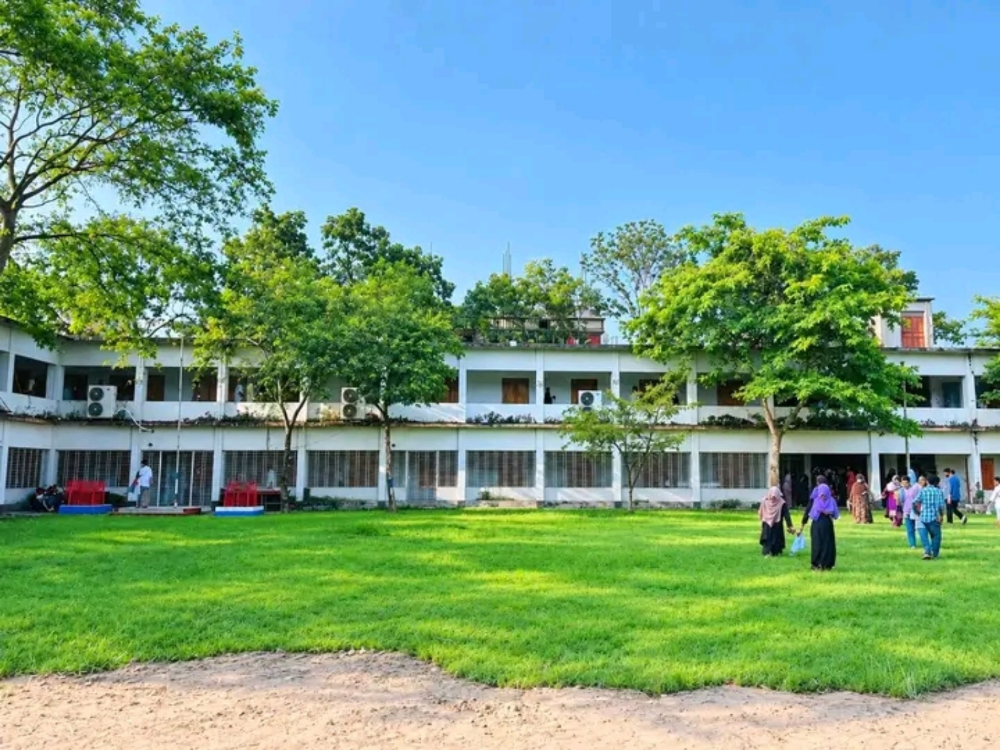

WELCOME TO OUR CAMPUS
ওয়ালী নেওয়াজ খান কলেজ
জ্ঞান, শৃঙ্খলা ও সুন্দর ভবিষ্যৎ গড়ার প্রত্যয়ে
কলেজ সম্পর্কে জানুনABOUT OUR COLLEGE
আমাদের কলেজ
ওয়ালী নেওয়াজ খান কলেজ, কিশোরগঞ্জের শিক্ষাঙ্গন ও ক্যাম্পাসের কিছু ছবি এখানে তুলে ধরা হয়েছে। কলেজের ইতিহাস, বিভাগ, শিক্ষকবৃন্দ, ভর্তি সংক্রান্ত তথ্য এবং অন্যান্য তথ্য কলেজ কর্তৃপক্ষের যাচাই করা তথ্য দিয়ে পরে যুক্ত করা যাবে।
CAMPUS MOMENTS
ক্যাম্পাস গ্যালারি
তোমার দেওয়া ক্যাম্পাসের ছবিগুলো



NOTICE BOARD
নোটিশ বোর্ড
নোটিশ
এখানে কলেজের যাচাইকৃত নোটিশ, পরীক্ষার সময়সূচি ও ভর্তি সংক্রান্ত ঘোষণা প্রকাশ করা হবে।
ডেমো ওয়েবসাইট — এখনো কোনো অফিসিয়াল নোটিশ প্রকাশ করা হয়নি।GET IN TOUCH
যোগাযোগ
ওয়ালী নেওয়াজ খান কলেজ, কিশোরগঞ্জ, বাংলাদেশ
ফোন, ইমেইল, EIIN এবং অফিসিয়াল ঠিকানা কলেজ কর্তৃপক্ষের কাছ থেকে নিশ্চিত করে এখানে যোগ করতে হবে।